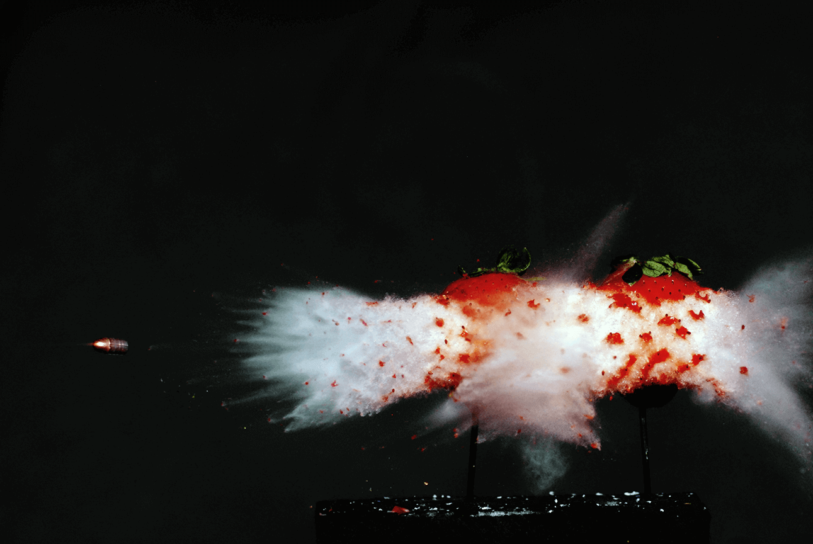

Each of these photographs was taken in with open shutters in a dark room where for a brief moment in time, a scene was illuminated by a strobe. Because camera imagers cumulatively collect information about detected light during the duration of the shutter’s opening, and the room is dark, only the illuminated instantaneous moment contributes to the final imaged formed on the imager. When the strobe is not on, the room is dark and no light is added to each pixel on the imager. I worked on physics based calculations, constructing circuits to capture images, camera set up, concepts, and photography to produce these images.
The first series of images here is a bullet going through strawberries. You can actually see the skin of the strawberry deforming and the bullet travelling. This set up required physics based calculations on distances between objects to select the aperture, relative distances and lens. A bullet was fired through a rifle with a long barrel that was secured to a stand. Not pictured is a bullet catcher that the bullet was lodged in after being fired. Because the bullet was being fired in the dark, security and certainty is calculation was extremely important.
The bullet traveled through a beam break sensor which activated a strobe with a small time delay (based on physics-based calculations). The strobe fired as the bullet passed through the strawberries and created the images shown here.
Bullets through strawberries,
Nikon D200, 100mm lens
2015
produced collaboratively in 6.163

This is a series of multiple images of red balloons popping. These, as all of the images were, were shot on a Nikon D200. This specific shot had a contact trigger that activated when a needle passed through a balloon in a systematic framework. Increasing time delays were applied between the trigger's activation and the strobe's firing to capture different stages of the balloon popping.
A series of images of balloons popping in different stages,
Nikon D200,
35mm lens
2015

These are images of a water balloon making contact with a surface before it bounces upwards. This project involved iterative testing to find the flattest moment of the balloon and also generate interesting images of the balloon that are otherwise hard to see by eye.
Flat water balloon,
Ripples caught in a water balloon,
bouncing off a surface,
Nikon D200,
35mm lens
2015
Here's another few images from a collaborative project I worked on. Below this, are two images produced from my final project in imaging the fracture front of a Prince Rupert's Drop. These are glass formations that are created by dropping molten glass into water, where the exterior solidifies much faster than the interior of the hot glass. This creates a delicate crystal structure that you can see in the colorful result of photographing the drops under cross polarized filters. When cracked on their tail ends, a fracture front propagates through the drop and turns it into a dust instantaneously. Our specific research was investigating whether the crystal structure is predictive of an incoming fracture front - whether the colors in the bulb change before the crack reaches it show that the structure is changing even before it pulverizes into dust.
Read more about our findings here!
Fracture front propagating through Prince Rupert’s Drops,
Drops handmade in glass lab,
Shot through cross polarized lens,
Nikon D200, 35mm lens
2015
produced collaboratively in 6.163